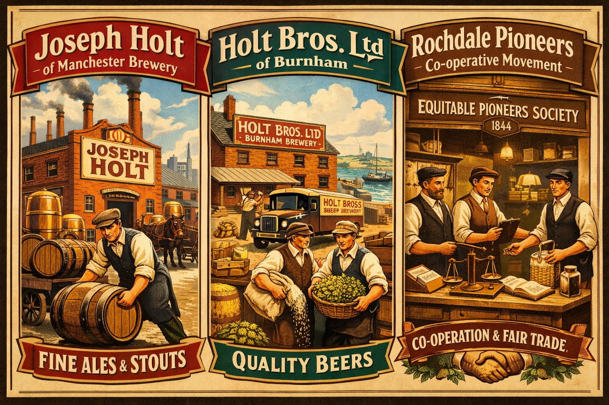

The Holt families contributed to Britain's industrial-era brewing and food industries through multiple independent enterprises. From Manchester's long-established Joseph Holt Brewery to the Burnham Holt Brewery and the cooperative movement pioneered in Rochdale, this hub page brings together the principal brewing and food-related branches of the Holt story.

Joseph Holt of Manchester Brewery
Founded in Manchester in 1849, Joseph Holt Brewery became one of the city's most recognisable independent breweries. Known for its strong regional identity and community ties, the brewery expanded through the industrial era and remains a significant part of Manchester's brewing heritage. Started by Jospeh Holt (1849-1886) born in Unsworth in 1849. His son Sir Edward Holt took over from his father when his health began to deterioate.
Holt Bros. Limited, The Brewery, Burnham Somerset
The Holt Bros. Brewery represents another branch of Holt brewing history, operating independently from the Manchester enterprise. Its development reflects the broader expansion of regional breweries during the industrial period, supplying local communities and contributing to the growth of food-related trades. The Holt family originated from the line of ship builders John Holt (1742-1828) and Mary Milner (1742-1803) in Whitby in Yorkshire. Started by William Skinner Holt Senior, William Skinner Holt Junior and Thomas Holt in 1895.
- Burnham Holt Bros. Brewery Page
- Pedigree: Burnham Holt Line
- Biography: Burnham Holt Brewery Founders
Rochdale Pioneers
The Rochdale Pioneers established the modern cooperative movement in 1844, transforming food distribution, pricing, and workers' rights. Their principles influenced many industrial communities, including areas where Holt families lived and worked. Although not a brewery, the Pioneers' role in food supply and cooperative retailing connects directly to the wider industrial food landscape.